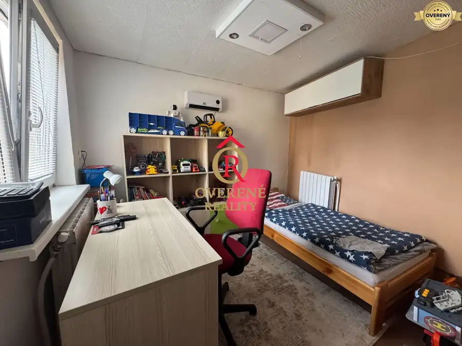
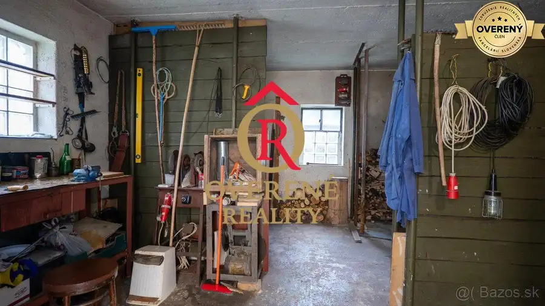
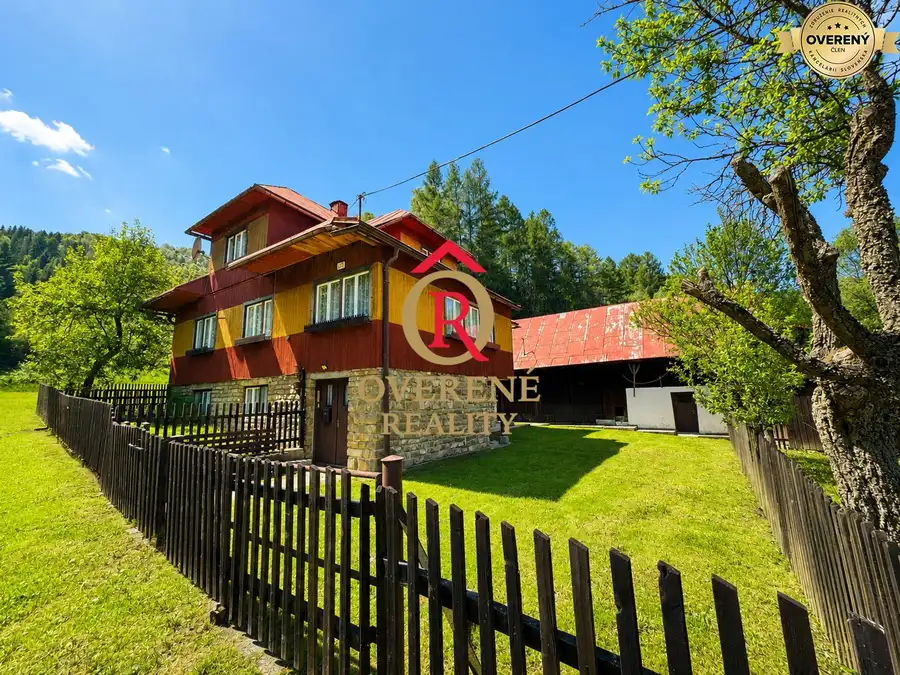
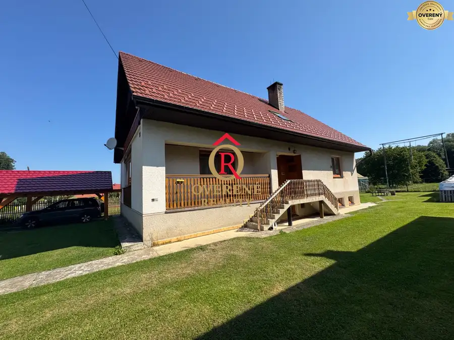
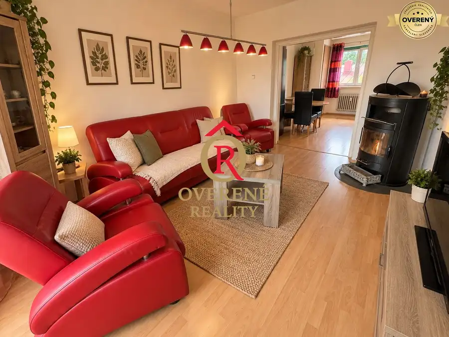

Aktuálna ponuka
Nehnuteľnosti, ktoré ponúkam
9 nehnuteľností na predaj a prenájom. Vyberte typ, alebo napíšte lokalitu.
9 z 9 ponúk
 Rodinné domy9
349 000 €NA PREDAJ - Novostavba Bungalovu v Svätom Kríži
Svätý Kríž
4-izbový137 m²
Hľadáte pokojné bývanie v prírode, kde si každý deň vychutnáte nádherné výhľady na hory a celodenné slnko na vlastnom pozemku? Tento štýlový bungalov…
Rodinné domy9
349 000 €NA PREDAJ - Novostavba Bungalovu v Svätom Kríži
Svätý Kríž
4-izbový137 m²
Hľadáte pokojné bývanie v prírode, kde si každý deň vychutnáte nádherné výhľady na hory a celodenné slnko na vlastnom pozemku? Tento štýlový bungalov…
 Byt
109 999 €Priestranný 2,5-izbový byt s výmerou 80 m² v Ružomberku
Ružomberok
2,581.73 m²3. podlažie
Byt sa nachádza na 3. poschodí zrekonštruovaného bytového domu a ponúka 81,73 m² obytnej plochy. K bytu patrí aj veľká pivnica. Najväčšou prednosťou…
Byt
109 999 €Priestranný 2,5-izbový byt s výmerou 80 m² v Ružomberku
Ružomberok
2,581.73 m²3. podlažie
Byt sa nachádza na 3. poschodí zrekonštruovaného bytového domu a ponúka 81,73 m² obytnej plochy. K bytu patrí aj veľká pivnica. Najväčšou prednosťou…
 Byt10
229 000 €Predaj 3-izbového bytu – ul. 1. mája | Krb | Vlastné kúrenie | Lodžia
Liptovský Mikuláš
3-izbový80.5 m²1. podlažie
Spoločnosť Overené Reality Vám ponúka na predaj priestranný a kompletne zrekonštruovaný 3-izbový byt na ulici 1. mája v Liptovskom Mikuláši. Byt sa…
Byt10
229 000 €Predaj 3-izbového bytu – ul. 1. mája | Krb | Vlastné kúrenie | Lodžia
Liptovský Mikuláš
3-izbový80.5 m²1. podlažie
Spoločnosť Overené Reality Vám ponúka na predaj priestranný a kompletne zrekonštruovaný 3-izbový byt na ulici 1. mája v Liptovskom Mikuláši. Byt sa…
 Byt
149 000 €3-izbový byt po kompletnej rekonštrukcii, Istebné, zariadený, 2 pivnic
Istebné
3-izbový62 m²2. podlažie
Ponúkame na predaj slnečný a kompletne zrekonštruovaný 3-izbový byt v obci Istebné, ktorý ponúka pohodlné bývanie v pokojnom prostredí s peknými…
Byt
149 000 €3-izbový byt po kompletnej rekonštrukcii, Istebné, zariadený, 2 pivnic
Istebné
3-izbový62 m²2. podlažie
Ponúkame na predaj slnečný a kompletne zrekonštruovaný 3-izbový byt v obci Istebné, ktorý ponúka pohodlné bývanie v pokojnom prostredí s peknými…

Rodinné domy 137 000 €Rodinný dom s garážou a dielňou – Ružomberok Hrboltová Ružomberok 120 m² Nehnuteľnosť ponúka zaujímavé možnosti nielen pre rodinné či dvojgeneračné bývanie, ale aj pre remeselníka, kutila alebo podnikateľa, ktorý hľadá dom…
Rodinné domy2 178 000 €Na predaj - rodinný dom s terasou a garážou – Liptovské Revúce Liptovské Revúce 6-izbový920 m² Overené Reality ponúkajú na predaj priestranný a veľmi zachovalý rodinný dom v obci Liptovské Revúce – Stredná Revúca, situovaný v pokojnej časti…
Chaty a chalupyRezervované10 189 000 €Horská usadlosť v Zázrivej pod Ruzsutcom Zázrivá 6-izbový190 m² Ponúkame na predaj pôvodnú drevenicu v krásnom a nerušenom prostredí obce Zázrivá, v obľúbenej rekreačnej oblasti Terchová – Zázrivá. Chalupa sa…
Rodinné domyRezervované5 260 000 €Rodinný dom v Liptovských Kľačanoch Liptovské Kľačany 6-izbový180 m² OVERENÉ REALITY ponúkajú na predaj priestranný viacizbový rodinný dom v pokojnej obci Liptovské Kľačany, obklopenej krásnou liptovskou prírodou. Ak…
BytRezervované2 118 000 €2-izbový byt s veľkou lodžiou – baničné Ružomberok 2-izbový Byt sa nachádza na 2. poschodí zatepleného bytového domu bez výťahu. Je prevažne v pôvodnom stave, čo novému majiteľovi ponúka výbornú príležitosť…Tomuto výberu zatiaľ nezodpovedá žiadna ponuka. Napíšte mi, čo hľadáte.